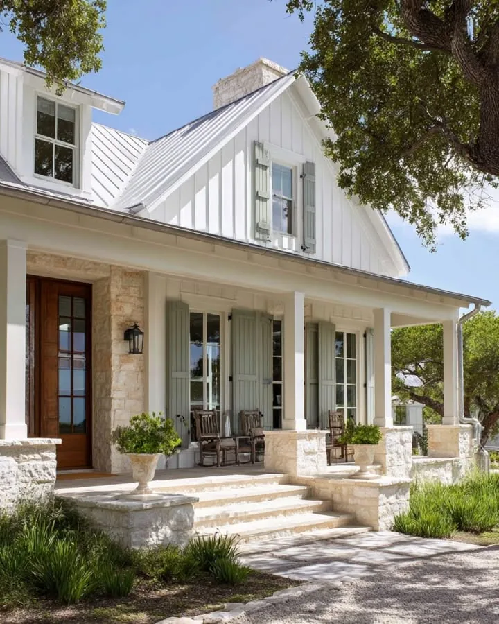
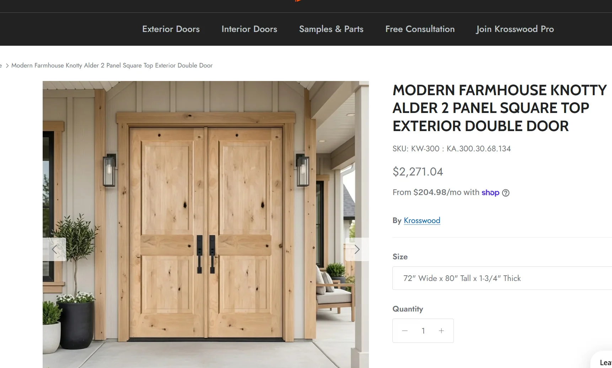

Front Entry
Keep the interior entry wall clear: no built-in console cabinet or wall picture above it.
Guest coat closet and powder-room alcove
Click either guest coat French-door leaf to swing it 90 degrees outward into the alcove; click again to close. These are outside-jamb hinged doors, not sliding doors or bifolds.
The double front entry is nominally 60 × 96 inches, with two closed oak/glass leaves and no sidelights or transom. Click/tap a modeled leaf to toggle it to the 180-degree conceptual swing and back; both start closed. Powder and guest coat doors also have 96-inch heads, matching the house-wide eight-foot door requirement. Preserve their existing widths, handing, lock selection and display poses. Actual stops and egress clearance are unverified.
Provide a separate guest coat closet beside the powder room, with both doors opening off a hall-facing alcove. Closet bounds are x = 7.1-12.2 ft, z = 35.1-37.5 ft: nominally 5.1 ft wide and 2.4 ft deep, approximately 24.6 inches clear depth between finished walls. Include a continuous hanging rail, upper shelf, and paired solid white-oak Shaker French doors with satin-gold pulls in a 48-inch opening. Each nominal 24-inch leaf hinges at its outer jamb and swings outward into the alcove; both start closed and meet at the center. Retain solid panels to conceal coats. This replaces the former small powder-area linen cabinet; guests do not enter the bathroom to store coats.
The alcove is open to the entry hall at its east edge, x = 12.2 ft, z = 37.5-41 ft. It has approximately 37.8 inches clear depth between walls; the powder door swings inward rather than into this space. Use the 1-foot strip previously added to the office, returning the office to 12.2 × 13.2 ft. Keep stairs, French doors, and exterior footprint fixed. Verify hanging capacity, door operation, occupied circulation, and accessibility with the architect. See the guest-entry view and powder-room details.
Exterior steps and stone contrast
The existing front beds now have five spaced evergreen mounds and seven low sage-green mounds each, with restrained 2-inch stone edges contained in the soil below the walk. The 9.8 ft gap between beds, entry steps, portal passage and driveway are unchanged. Plant species, mature spread, soil, drainage, frost-resistant edging and maintenance access require landscape review.
Latest entry close-up: actual curved oak double leaves now fit the matching arched opening in both the furnished and exterior model. A continuous deep white surround and projecting molding follow the same curve, with oak-grain upper/lower recessed panels and paired dark pulls rather than glazed rectangular slabs. The nominal combined unit is 60 in wide and 96 in high at the crown; spring height is 85.2 in, not a uniform 96 in clear opening. Doors start closed; the modeled inward endpoint is 110 degrees, not an approved hardware stop. The Wyze lock remains a selection placeholder on the right active leaf. Inner columns become 15.6 in square with larger brick bases and layered capitals, outer columns stay 12 in, and brass lanterns mount clear of the column faces. Keep the raised porch beam and pediment so the arch remains visible. This supersedes the rectangular-leaf approximation. Verify actual arched products, clear passage/egress, hinges, lock compatibility, threshold/flashing and porch structure with the architect.
Current articulated entry: retain the single standing-seam porch plane, without a pediment or new valleys. A deep pale-stone portal jackets the existing central support positions: 21.6-inch-wide, 26.4-inch-deep shafts, broader feet and a 9.6-inch entablature. Its underside is 8.9 ft, 10.8 inches above the unchanged closed 96-inch arched oak doors. The minimum central passage is 69.6 inches at the feet, 73.2 inches between shafts. Lanterns mount forward of the deeper faces. Retain the outer columns, porch footprint and broad steps. Stone color and depth are conceptual; concealed structural supports, veneer anchors, lintels, flashing, drip grooves and drainage require professional design. Earlier pediment and 9.7 ft central-clearance descriptions are superseded; the original outer header remains at 9.7 ft.
Inspect the arched entry detail using the existing exterior camera menu. Select Day lighting for materials and relief, Night for the lantern study.
Porch/garage connection: clipped standing seams and fitted fascia/header remain below the roof plane. The matching 3:12 garage metal brow and 12.9-inch-wide return meet the raised porch at a closed step. Lower this assembly six inches to clear the new garage hip: wall attachment begins at 8.8 ft; full-width brow falls 8.6125–8.3 ft beyond the hip edge. The return ends at 7.55 ft outside the entry route. Inspect Roof plan. Ledgers/outriggers, garage header loads, collector/outlets, flashing and selected roofing products remain unverified.
Broader brick stairs: a 10 ft 9.6 in-wide stair has three equal 5.4 in risers, 12.6 in goings and flush contrasting nosings. A 1.8 in brick landing nose connects the porch to the first riser; the last tread meets the existing front path at z = 64.5, top y = -1.35. Brick joints follow each face rather than stretching across the tread. Patio stairs are unchanged. Surveyed grades, slip resistance, drainage, handrails/guards and structural base remain to verify.
Entry lighting: two warm ceiling fixtures sit at x = 4.2/26.5, z = 58.5 under the actual raised standing-seam canopy, with the wall downlight above the door and retained column lanterns. Front-step markers provide soft tread washes. Existing Night/Day controls all exterior sources and lens glow. No uplights or extra controls are added. Verify mounting, glare/spill, outdoor ratings, wiring and required illumination; see the lighting schedule.
The front elevation study now uses brick front treads with contrasting dark nosings and warm markers. Existing porch-step dimensions remain provisional, not verified consistent risers to surveyed grade. Review slip resistance, drainage, threshold/landing dimensions, handrails/guards and accessible entry with the architect. Patio stairs and their ground-level terrace are unchanged.
Entry approach: use the garage/driveway and the remaining porch-side paver connection to reach the steps. Remove the separate straight walkway from the porch crossing toward the street/front lot boundary; leave lawn there. The driveway stays continuous without a separate paver apron across it.
Front-door smart lock
Use a Wyze smart lock on the active leaf of the double front entry. Exact model, finish, active-leaf handing, and exterior keypad/reader arrangement are not selected. The 3D model shows one schematic interior lock body above the existing pull; it is not a product rendering or an approved installation.
Before ordering or drilling, confirm the selected Wyze model with the door supplier: door thickness, bore/backset, available stile width beside the glazing, deadbolt/latch compatibility, pull spacing, weather exposure, battery access, and free interior egress. Coordinate the inactive leaf's astragal, strike, and flush bolts. Do not assume compatibility with a multipoint door system or that every Wyze model uses the same exterior hardware.
Wants
Love the stairs that lead to the front porch. It’s wider and safer too.

Front door is a double door entry, without surrounding sidelights or a transom. Retain glazing within the door leaves. No entry rug or runner; leave the oak floor exposed.
